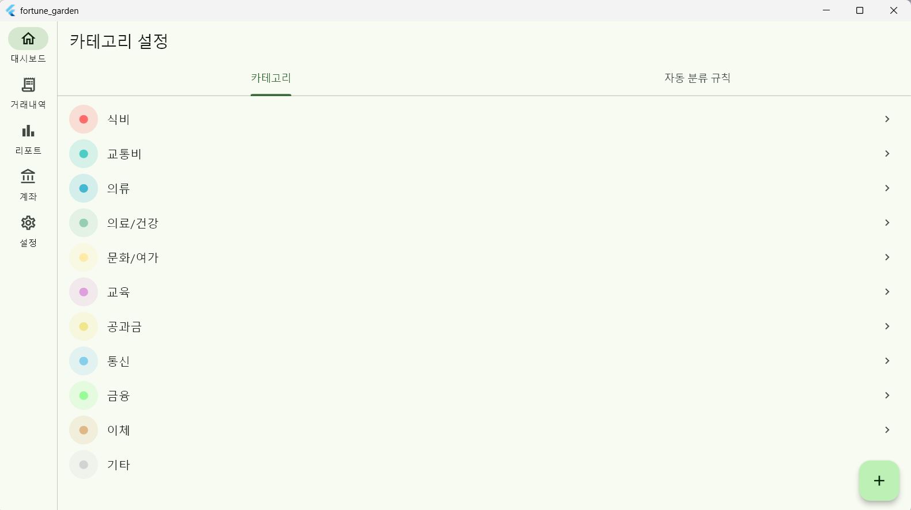
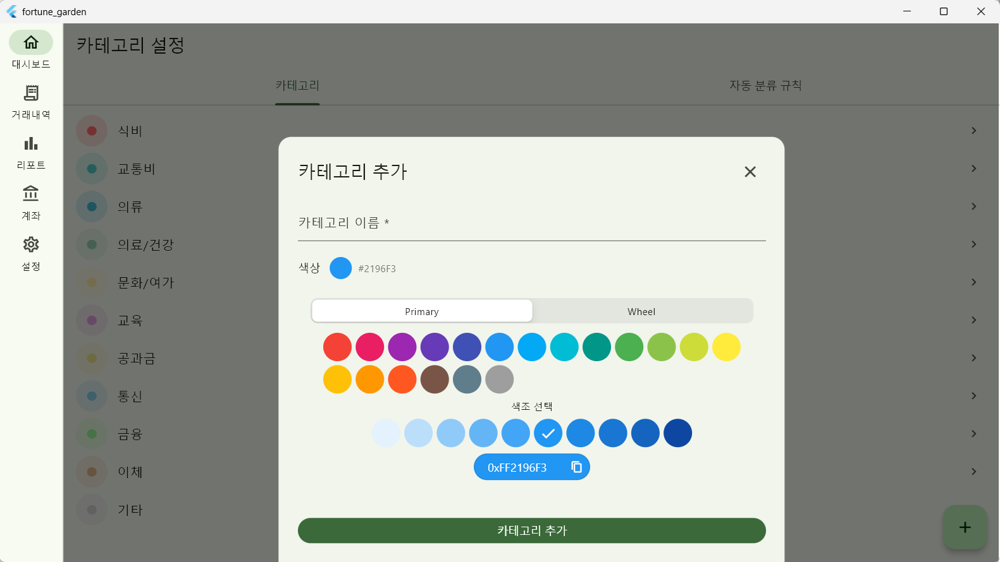
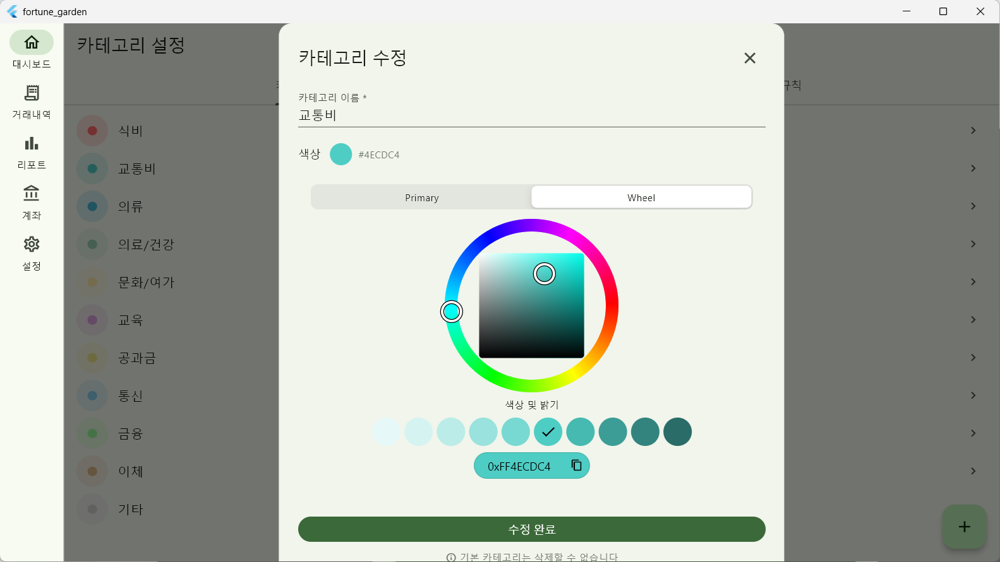

Overview
작업 개요
대상 화면
SCR-009 /categories (카테고리 설정)
기존 상태
단순 목록 조회만 가능 (규칙 기능 전무)
핵심 작업
카테고리 CRUD + 자동 분류 규칙 시스템 구축
주요 패키지
flex_color_picker: ^3.8.0
Part A — Architecture
화면 구조 및 Provider 설계

A1. 탭 기반 레이아웃
CategoriesScreen을 TabController 기반의
2개 탭으로 확장하여 관리 효율성을 높였습니다.
CategoriesScreen (ConsumerStatefulWidget) ├── TabBar (카테고리 / 자동 분류 규칙) ├── TabBarView │ ├── _CategoryListTab (색상/이름 관리) │ └── _RuleListTab (키워드 매칭 규칙 관리) └── FAB (선택된 탭에 따라 추가 액션 분기)
A2. 신규 상태 관리: category_rule_providers.dart
두 탭에서 공통으로 참조하는 데이터 공급자를
FutureProvider로 정의했습니다.
// 전체 카테고리 및 규칙 목록 로드 final allCategoriesProvider = FutureProvider<List<Category>>((ref) { return ref.watch(categoryRepositoryProvider).getAll(); }); final categoryRulesProvider = FutureProvider<List<CategoryRule>>((ref) { return ref.watch(categoryRepositoryProvider).getRules(); });
Part B — Category Management
카테고리 관리 (Tab 1)

B1. 커스텀 카테고리 CRUD
-
추가/수정:
showModalBottomSheet를 통해 폼을 제공하며,isCustom: Value(1)속성을 부여합니다. - 삭제 제한: 기본 제공 카테고리(isCustom: 0) 11개는 삭제를 방지하여 시스템 안정성을 확보했습니다.
-
연쇄 처리: 삭제 시 기존 거래 내역의 카테고리를
NULL로 전환하는 트랜잭션을 적용했습니다.
B2. 컬러 피커 및 데이터 포맷

flex_color_picker를 통해 팔레트 및 휠 인터페이스를
제공하며, 선택된 색상은 HEX 스트링으로 변환되어 저장됩니다.
// Color 객체를 DB 저장을 위한 HEX 문자열로 변환 String _colorToHex(Color color) => '#${color.value.toRadixString(16).substring(2).toUpperCase()}';
Part C — Auto-Classification
자동 분류 규칙 (Tab 2)
C1. 규칙 설정 파라미터
| 설정 항목 | 설명 |
|---|---|
| 키워드 | 거래처명 포함 여부를 판단하는 LIKE 검색 기준 |
| 적용 대상 | 공용 / 프로필 1 / 프로필 2 (SegmentedButton 활용) |
| 우선순위 | 중복 매칭 시 적용 순서 결정 (숫자가 높을수록 우선) |
C2. UX 및 인터랙션
규칙 목록에서 Dismissible 위젯을 적용하여 왼쪽
스와이프만으로 간편하게 규칙을 삭제할 수 있도록 구현했습니다.
Part D — Changed Files
변경 파일 목록
| 파일 경로 | 유형 | 변경 내용 요약 |
|---|---|---|
lib/presentation/screens/categories/categories_screen.dart
|
수정 | 탭 확장 및 카테고리/규칙 CRUD UI 전체 구현 |
lib/presentation/providers/category_rule_providers.dart
|
신규 | allCategories, categoryRules FutureProvider 선언 |
Part E — Backlog
미완료 작업 (우선순위)
- PIN 잠금 화면 (SCR-010): 저장 로직 연동을 위한 UI 화면 개발
- 대시보드 통계 차트: 카테고리별 지출 비율(Donut) 및 월별 추이(Bar) 컴포넌트
Comments